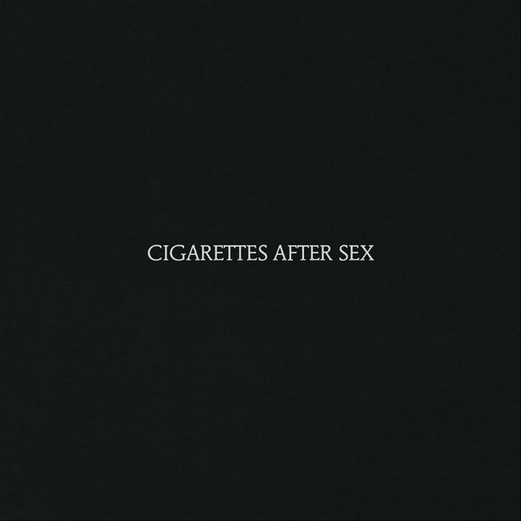
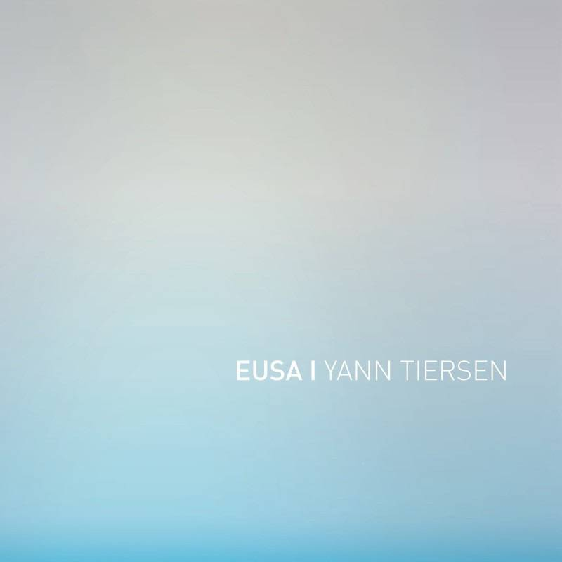

I have two sisters and two cats.
|  |
Cigarettes After SexAn American ambient pop band formed in 2008, from El Paso, Texas, founded by Greg Gonzalez.
|
Devendra BanhartDevendra Banhart is a Venezuelan-American artist, singer, songwriter and traveler. He is, at heart, a folk musician, and has been identified as a leader and major influence on an evolving genre of new folk music that incorporates elements of psychedelia, world music, pre-rock folk and post-rock and is variously called psych folk, freak folk or even New Weird America.
|
|
|  |
YannTiersenYann Tiersen is a French musician and composer. His musical career is split between studio albums, collaborations and film soundtracks. Le Fabuleux Destin d'Amélie Poulain...
|